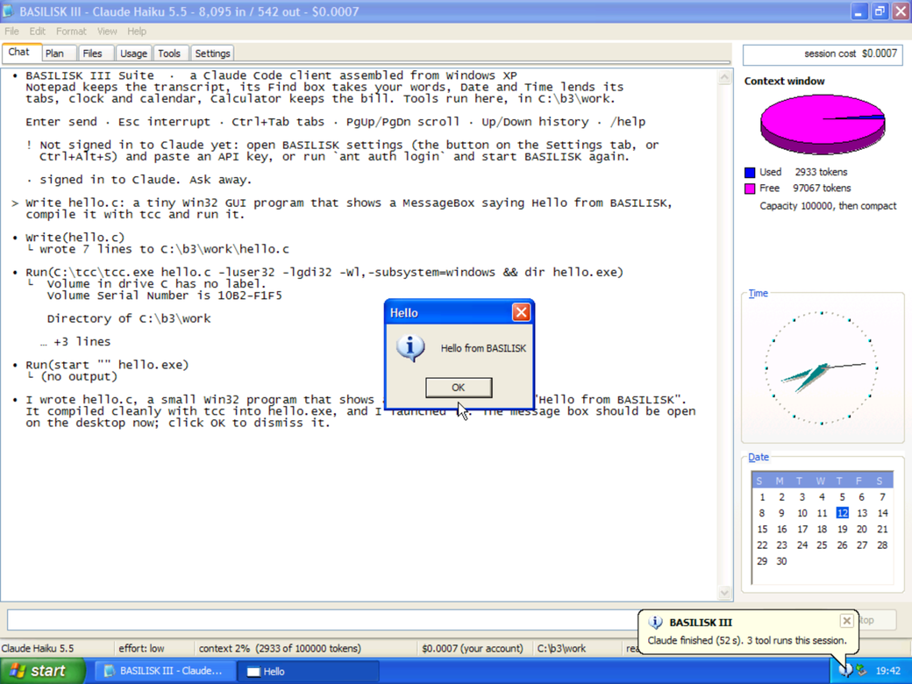
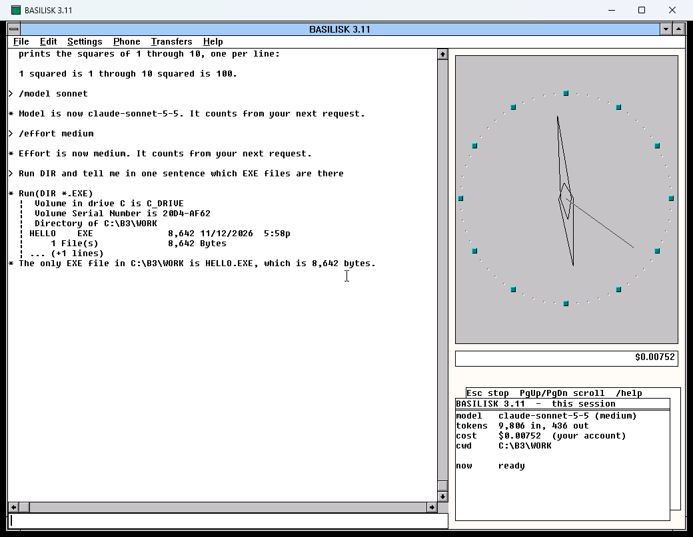

BASILISK is Claude Code living inside old Windows, built by Windows itself out of its own programs: on XP from Notepad, Find, Date and Time and Calculator; on 3.11 from Notepad, Terminal, Clock, Cardfile and Calculator. On this site it runs on a shared server, one visitor at a time, on a small monthly budget. Downloaded, it is yours: no queue and no caps, any model and effort you like, and it bills your own Anthropic account.

One window, titled BASILISK XP: Windows XP with the BASILISK III suite (Chat, Plan, Files, Usage, Tools, Settings) already built and running. The first start downloads the machine once (790 MB) and unpacks it; after that it opens in about 1 to 3 seconds, because XP resumes from a snapshot taken just after BASILISK assembled itself. Turn on Intro in settings to watch the build every time. Claude writes files in C:\b3\work, runs commands, and compiles and runs C with tcc, all inside XP.
Plus the machine itself, fetched on first start: basilisk-xp-machine-1.qcow2.xz, 753 MB (930 MB unpacked). Checksums and everything else are on the release page.
| Windows | Unzip, open the BASILISK XP folder, double-click BASILISK XP.exe. SmartScreen may say "Windows protected your PC": More info > Run anyway. It adds itself to the Start menu. |
|---|---|
| macOS | Open the .dmg and drag BASILISK XP to Applications. It is not notarized, so the first time right-click it > Open > Open (macOS 15 and later: System Settings > Privacy & Security > Open Anyway), or run xattr -dr com.apple.quarantine "/Applications/BASILISK XP.app". |
| Linux | chmod +x BASILISK-XP-linux-x64.AppImage and run it. AppImages need FUSE 2 (Ubuntu: sudo apt install libfuse2), or run it with --appimage-extract-and-run. QEMU and its C library are inside. |
On the first start BASILISK XP's own settings open: paste an API key from console.anthropic.com (checked with one tiny call, kept on your computer readable only by you), or use ant auth login or ANTHROPIC_API_KEY. Same billing as above: your account, API prices, no caps. Pick Haiku 5.5, Sonnet 5.5, Opus 5.5 or Fable 5.2 and any effort in the settings, on XP's Settings tab, or with /model and /effort in Chat. Settings: Ctrl+Alt+S (Mac: ⌘,); full screen F11 (Mac: Ctrl+⌘F). Closing the window asks whether to keep the machine as it is (windows, files, the conversation) or start fresh next time. Reset machine goes back to the freshly built BASILISK.
Windows XP (© Microsoft), the same machine as BASILISK III on this site, run by QEMU (GPLv2) with no window of its own: BASILISK XP draws XP's screen itself (pygame-ce/SDL2) from a private local socket and passes keys and the mouse straight in. XP is emulated (no hardware acceleration can resume the shared snapshot), which is plenty for BASILISK. On macOS and Linux XP can reach only BASILISK; on Windows QEMU gives it ordinary NAT networking. No sound card. Sources: packages/basilisk-xp.

One window, titled BASILISK 3.11. The first start shows the build: Windows boots, pours BASILISK.C into Notepad, compiles it with Open Watcom, and assembles the client (about half a minute). Later starts open straight into BASILISK in about eight seconds. Type in the line at the bottom. Claude can run DOS commands, read and write files, and compile and run C programs, all inside 3.11.
All files, checksums and the DOSBox-X source are on the release page.
| Windows | Unzip, open the BASILISK 3.11 folder, double-click BASILISK 3.11.exe. SmartScreen may say "Windows protected your PC": More info > Run anyway. It adds itself to the Start menu. |
|---|---|
| macOS | Open the .dmg and drag BASILISK 3.11 to Applications. It is not notarized, so the first time right-click it > Open > Open (macOS 15 and later: System Settings > Privacy & Security > Open Anyway). Or skip the warning by downloading in Terminal:
curl -LO https://github.com/williamsharkey/windows-secrets/releases/download/basilisk-3.11-v1.0.0/BASILISK-3.11-macos-arm64.dmg open BASILISK-3.11-macos-arm64.dmg |
| Linux | chmod +x BASILISK-3.11-linux-x64.AppImage and run it. Needs a desktop (X11 or Wayland) and glibc 2.35 or newer (Ubuntu 22.04, Debian 12, Fedora 36 and later). |
Copy your API key from console.anthropic.com, then type /login inside BASILISK. It reads the key from your clipboard (never typed, never shown), checks it with a free call, and keeps it on your computer, readable only by your account. If you use the Anthropic CLI, ant auth login works too, as does ANTHROPIC_API_KEY.
You do. Requests go from your computer straight to the Claude API and are billed to your Anthropic account at the published prices. A Claude.ai Pro or Max plan does not cover API use. BASILISK has no caps: the bill so far is on the Calculator and in /cost, and the Console can set a spend limit.
| /model | model | per million tokens, in / out |
|---|---|---|
| haiku (default) | claude-haiku-5-5 | $0.10 / $0.50 — writing and running a small C program costs well under a cent |
| sonnet | claude-sonnet-5-5 | $2 / $10 |
| opus | claude-opus-5-5 | $4 / $20 |
| fable | claude-fable-5-2 | $8 / $40 |
/model and /effort low|medium|high|xhigh|max change the model and how hard it thinks, from the next request. /settings shows everything. /intro on brings back the build at every start. /size picks the window size, and Alt+Enter switches to full screen. /files: drive D: is a folder on your computer (Documents/BASILISK 3.11), shared both ways. /reset gives you a fresh C: on the next start. Closing the window quits.
Windows for Workgroups 3.11 (© 1993 Microsoft), included as part of this art project. The engine is DOSBox-X (GPLv2): the official build, with one change, a byte patch to its window-title format so the title reads BASILISK 3.11. Its source is attached to the release. Also included: Open Watcom, Python (python-build-standalone) and the Anthropic SDK. Everything else is in packages/basilisk-311.
BASILISK 16 (Windows 3.11), the instrument made of sixteen real Sound Recorders, has its own page: BASILISK 16 downloads. Demos and presets are on sndrec.html. (The Windows XP edition is archived.)